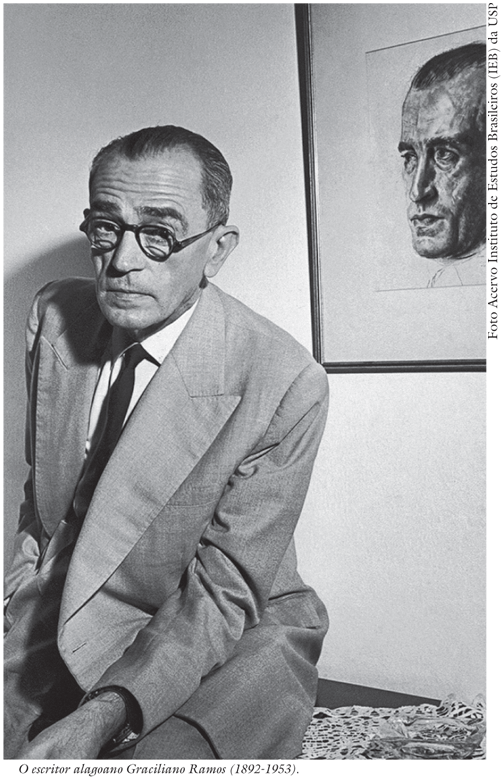

Graciliano Ramos

Graciliano Ramos.
Fonte: Portal Galego da Língua.
Trajetória e Impacto
Graciliano Ramos (1892-1953) é um dos maiores nomes da literatura brasileira, sendo o principal expoente da prosa regionalista de 30. Nascido em Quebrângulo, Alagoas, sua trajetória foi marcada por um compromisso ético rigoroso, tanto na literatura quanto na vida pública, onde chegou a servir como prefeito de Palmeira dos Índios.
Sua escrita é definida pela "estética da secura", ou seja, um estilo conciso, avesso a sentimentalismos e adornos, que utiliza a linguagem para expor as contradições sociais e o drama psicológico do homem nordestino. Esse artesanato da palavra transformou Vidas Secas em um clássico universal, traduzido para dezenas de países.
🎧 Podcast: A Linguagem do Emudecimento
Reflexão sobre a comunicação e a animalização em Vidas Secas.